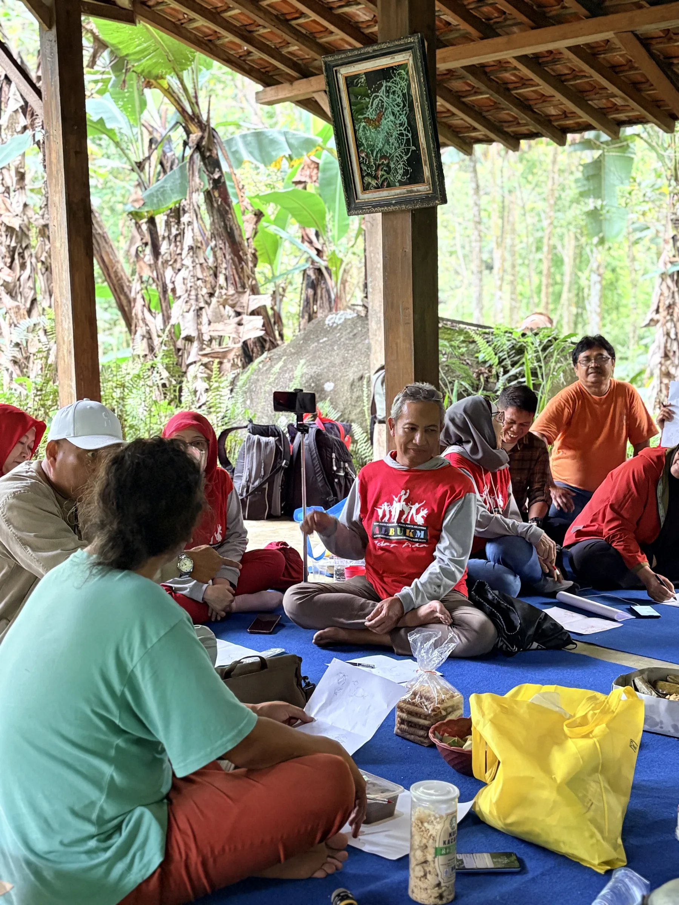

Impact & Legacy
What we leave behind.
KUDAKU is measured by the knowledge, livelihoods, and relationships it leaves in place.
Success indicators
Measured in what KUDAKU leaves behind.
KUDAKU tracks what it leaves behind — across culture, education, economy, network, creativity, ecology, and legacy.
Knowledge legacy
An archive that outlives any event.
Every KUDAKU Nusantara and every program feeds a growing archive — recipes, oral histories, documentation, and practice records.
This is the quiet work of the platform: to keep what is tasted and spoken each year as a shared inheritance for the generations that follow.
